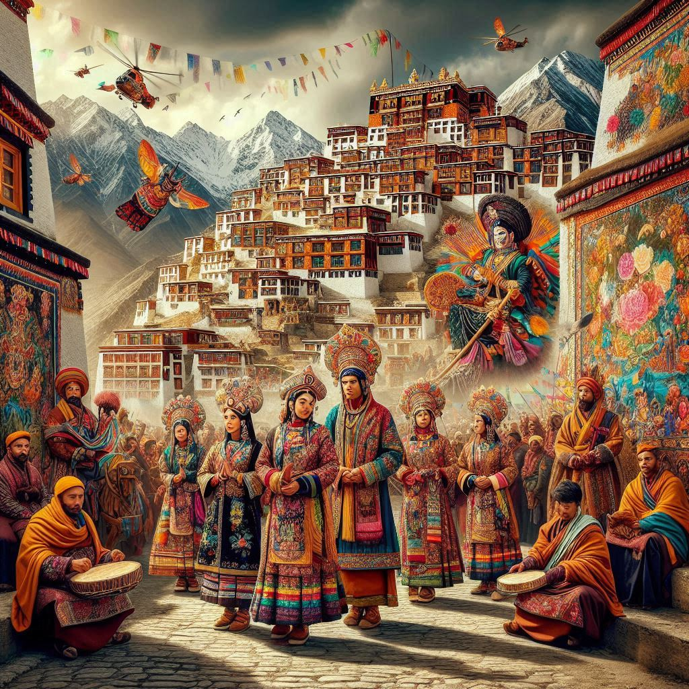
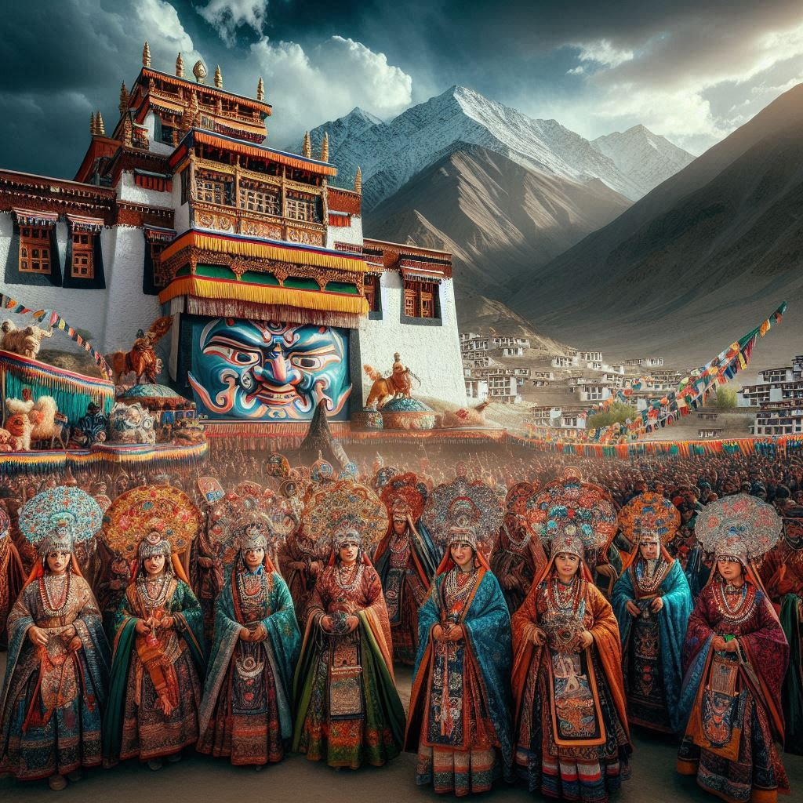

Ladakh, a region located in the northernmost part of India, is renowned for its rich and unique culture, shaped by its geographic isolation, history, and blend of Tibetan and Buddhist traditions. The culture of Ladakh is deeply influenced by its environment and its people’s long-standing relationship with Buddhism and Tibetan traditions. The culture of Ladakh can be seen in its people, festivals, arts, crafts, clothing, and daily life.
1. Religion and Spiritual Life:
- Buddhism is the predominant religion in Ladakh, and it plays a central role in the cultural life of the region.
- The Buddhist monasteries (gompas), such as Hemis, Thiksey, and Lamayuru, are not only places of worship but also centers for learning, art, and community gatherings.
- Ladakh is also home to a sizable Shia Muslim population, especially in regions like Kargil, contributing to the region's cultural diversity.
2. Festivals:
- Hemis Festival: This is the most famous festival in Ladakh, held in the Hemis Monastery, dedicated to Guru Padmasambhava. It is celebrated with traditional dances, music, and the display of a large thangka (religious painting).
- Losar: The Tibetan New Year, known as Losar, is celebrated with feasts, traditional dances, and family gatherings. It marks the start of a new year in the Tibetan lunar calendar.
- Ladakh Festival: Celebrated annually, this festival showcases the region's music, dance, and traditional sports like polo. It is a celebration of Ladakhi culture, featuring traditional songs, dances, and sports competitions.
- Phyang Festival: A unique religious festival, held at the Phyang Monastery, celebrated with traditional rituals, dances, and prayers.
3. Art and Craft:
- Pashmina Shawls: Ladakh is known for its fine-quality Pashmina wool, which is used to make shawls, scarves, and other garments. The wool is collected from Pashmina goats, and the weaving tradition is passed down through generations.
- Thangka Paintings: These are traditional Buddhist scroll paintings, which often depict deities, mandalas, and other religious scenes. They are an integral part of Ladakhi art and culture.
- Wood and Metal Craft: Traditional wooden furniture, carved with intricate designs, is a common craft in Ladakh. Metal crafts, such as silver jewelry and Buddhist ritual objects, are also highly prized.
- Kashmiri Carpets and Rugs: The region also produces handwoven carpets and rugs, with unique designs and patterns.
4. Clothing:
- Goncha: The traditional outfit for men is the Goncha, a woolen cloak worn over a long-sleeved shirt, along with a scarf and gloves. The Goncha helps protect against the cold desert winds.
- Pattu: For women, the Pattu is a traditional dress made of wool, worn along with a long-sleeved blouse. Women often wear a decorative hat called Perak, adorned with jewelry and other ornaments.
- Headgear and Jewelry: Women in Ladakh often wear elaborate headgear and jewelry, including the shambal (headpiece), necklaces, and earrings, which are made from silver and coral.


5. Language:
- The main languages spoken in Ladakh are Ladakhi, which is a Tibetan dialect, and Shina, spoken in the Kargil district. Hindi and English are also widely spoken, especially in urban areas.
- The Tibetan Buddhist traditions influence the language, as many religious terms and phrases are derived from Tibetan.
6. Cuisine:
- Thukpa: A noodle soup with vegetables, meat, and spices. It is a popular dish, especially in the winter months.
- Momos: Tibetan-style dumplings filled with vegetables or meat, often served steamed or fried.
- Skyu: A traditional stew made with wheat flour, vegetables, and meat.
- Chai (Butter Tea): A salty tea made with butter and tea leaves, sometimes mixed with spices. It is an essential drink in Ladakhi culture.
- Chang: A traditional barley-based alcoholic beverage, served cold or warm. It is an important part of the region's social life.
7. Music and Dance:
- Traditional Music: The music of Ladakh is influenced by Tibetan Buddhism. Instruments such as the dungchen (long trumpet), damaru (small drum), and gyaling (a kind of oboe) are used in religious rituals and festivals.
- Folk Dances: Ladakhi dances are colorful and lively, with performances at religious festivals. The Chutuk dance and Shondol dance are two well-known forms performed by men and women in traditional costumes.
8. Architecture:
- Monasteries and Gompas: These are the most iconic buildings, often perched on hilltops. The Shey Palace and Leh Palace are examples of ancient Ladakhi architecture.
- Traditional Ladakhi Houses: These are built using mud bricks and are designed to keep the interiors warm during the cold winters. They often have flat roofs, small windows, and courtyards.
9. Lifestyle:
- The lifestyle in Ladakh is closely tied to nature and the environment. People in Ladakh rely on agriculture, animal husbandry (especially for pashmina wool), and tourism for their livelihoods.
- The harsh terrain means that Ladakhi life is simple, with a strong sense of community and tradition. People in Ladakh generally lead a peaceful and spiritual life, with a focus on sustainable living, respect for nature, and a deep connection to their Buddhist faith.
In conclusion, Ladakh’s culture is a fascinating blend of Tibetan Buddhism, ancient traditions, and a unique lifestyle adapted to the high-altitude desert environment. The people of Ladakh take pride in their cultural heritage, and their festivals, food, art, and daily practices reflect the deep spirituality and resilience of this remarkable region.